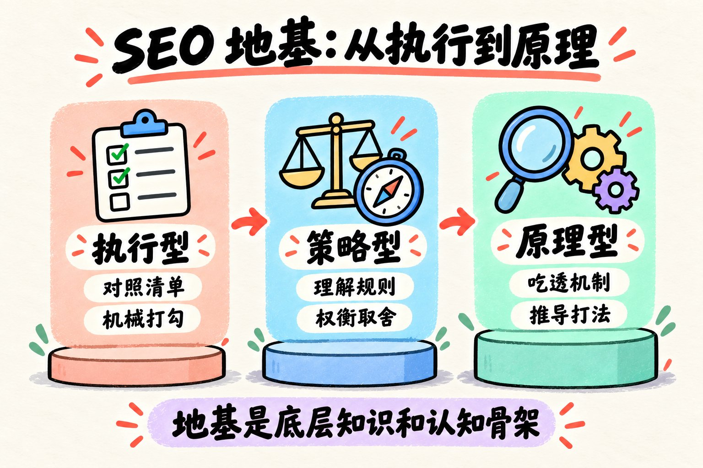
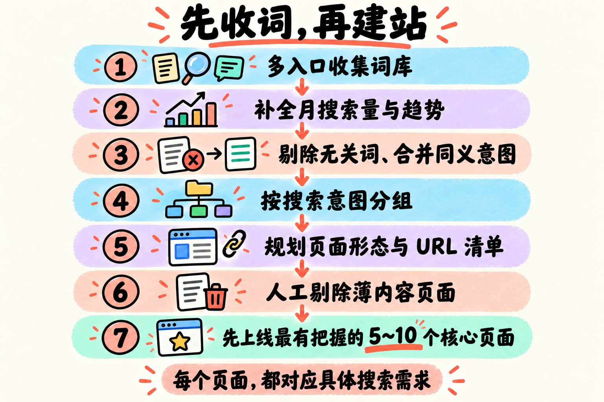

大家好，今天是 2026 年 10 月 17 日，周六。
前天我写了一篇复盘，聊到看了理想大佬发来的一份网站诊断记录，当时整个人就被当头一棒。
说实话，发现自己太依赖 AI，思考少了，SEO 技能居然不知不觉在退化。
昨天又借着张璐阳老哥出海破壳赚了 2 刀的喜讯，跟大家温习了“站找站、词找词”的 5 步循环。
结果昨晚后台好几位虾友私信问我：
“虾哥，大家都说搞出海搞 SEO 要先把地基打牢，但到底啥是基础？啥是地基啊？总不能天天拿着各种清单机械打勾吧，到底该怎么学、怎么练扎实？”
可能很多刚起步的朋友，心里也一直憋着这个疑问。
其实熟悉我的老读者都知道，从去年底我动念头搞出海开始，只要一遇到卡壳或者迷茫，我就会跑去死磕哥飞公众号的那几百篇干货。
一遍看不懂就看两遍，反复看，反复做笔记，再拿到自己的独立站上去验证。
今天索性把这些压箱底的笔记彻底抖出来，结合我这一年多真金白银买域名、上站踩坑的教训，完完整整拆解一次：
到底什么才是真正的 SEO 地基？哪些硬技能必须练扎实？以及怎么用一套最稳的实操路径走出新手村？
废话不多说，咱们直接上硬菜。
一、SEO 的“地基”到底是什么？
很多人一听到“打牢 SEO 地基”，第一反应就是去搜一份现成的“SEO 优化 Checklist”：
Title 放关键词了吗？图片加 Alt 标签了吗？Sitemap 提交了吗？外链做了吗？
对照着清单一项一项打勾，觉得全打上勾了，地基就算打牢了。
说实话，大错特错。
在出海圈子里，真正的 SEO 玩家通常分三个段位：
- 第一层，执行型 ：手里拿着清单，别人让干啥就干啥，机械打勾；
- 第二层，策略型 ：在已知的规则和框架里，懂得算账和权衡，能做出局部最优解；
- 第三层，原理型 ：真正吃透了底层搜索机制。哪怕遇到前所未有的新场景、新算法波动，自己也能推导出打法。
发现没有？
如果你脑子里只有那几张死板的清单，那你充其量只是个随时能被替代的搬砖工。
一旦哪天网站不收录了，或者关键词排名往下掉，你就会两眼一抹黑，除了到处发帖问“谷歌是不是又抽风了”，根本不知道问题出在哪。
所谓的地基，从来不是死记硬背几十条优化条目，而是推着你从“执行型”跨越到“原理型”的底层知识和认知骨架。

飞哥在文章里曾说过一句特别扎心的大白话：
“你一个做 SEO 工作的人，如果对谷歌搜索的工作原理不了解，就只能学会 SEO 的皮毛。”
懂底层原理的人，看到一个 HTML 标签、一次状态码返回，脑子里立马能浮现出爬虫抓取和权重传递的全链路；
不懂原理的人，做 SEO 就只能全凭烧香拜佛看玄学。
二、做站搞钱的五大基础板块：你的全景能力图
做独立站出海，要想真正跑通一个正向循环的商业闭环，底层其实离不开这五块大拼图：
基础板块 核心目标 解决的关键问题
① 建站基础
技术地基 怎么低成本、高效率上线一个让搜索引擎喜欢的合格站点
② SEO 基础
核心地基 怎么让爬虫爬得到、看得懂、愿意给好词高排名
③ 推广基础
冷启动地基 怎么利用工具链顺藤摸瓜，给新站引来第一波信任和权重
④ 运营基础
迭代地基 怎么看懂后台数据波动，持续修剪和盘活老页面
⑤ AdSense 基础
商业化地基 流量进来之后，怎么稳妥高效地把真金白银揣进口袋
这五个板块就像木桶的五块板，缺了任何一块，网站都很难持续搞到钱。
下面我把这五大板块拆碎了讲。
三、关键技能逐层拆解：必须吃透的五大硬本领
1. 建站基础（技术地基）
我们做技术出身的朋友都知道一句大实话：
技术地基没搭好，搜索引擎爬不到、看不懂、抓取成本还死高。后面你再怎么拼命堆内容、刷外链，也全都是事倍功半。
这一块必须拿下两部分能力：
- 底层机制 ：HTTP 状态码、爬虫工作机制，以及谷歌搜索的四个核心阶段：抓取（Crawl） → 解析（Parse） → 索引（Index） → 查询展现（Serving）。 懂了这四个阶段，很多诡异现象就想通了。比如“为啥 Ahrefs 能查到外链，GSC 后台却看不到？”——说白了，Ahrefs 爬到了不代表谷歌爬到了，谷歌爬到了不代表愿意收进索引库，中间隔着好几层权重过滤呢！
- 实操硬功 ：选干净无黑历史的域名；在 Cloudflare 配 DNS 解析；用 Cloudflare Pages 或 Vercel 秒级部署；埋好统计代码和 GSC 权属验证；配置 robots.txt（严防误写 Disallow 全站）；按量切分 Sitemap；设计扁平清晰的 URL 路由；以及优化核心网页指标（Core Web Vitals），确保首屏加载 LCP < 2.5s。
2. SEO 基础（核心地基）
核心中的核心，重点死磕两件事：
- 关键词研究（找需求） ： 51 个经典词根 ：围绕 generator、creator、maker、builder、checker、converter 等经典需求词根批量拓展长尾； 多入口收词 ：翻谷歌下拉框、底部的相关搜索、Google Trends、Similarweb、Semrush、Ahrefs 和谷歌 Keyword Planner； 搜索意图判别 ：分清用户是想生成、转换还是查教程，意图不同，页面形态和功能截然不同； KGR 黄金比例公式 ：用 allintitle:关键词 结果数除以月搜索量，专挑小于 0.25 的低竞争蓝海词下手，新站最容易拿排名。
- 站内优化（On-Page SEO） ： 从 TDK 升级到 TDH ：Title 是决定排名的核心命脉；Description 决定搜索结果点击率（CTR）；H1 则是页面内唯一的定海神针，死守核心词。至于过时的 Keywords 标签直接删掉，免得过度堆砌被盯上； 语义层级结构 ：每个页面死守唯一的一个 H1，H2 和 H3 负责层层递进解释，像写代码规范一样层级分明； 图片优化 ：img 标签必填 alt 语义说明，大图压缩到合理尺寸，绝不拖慢加载； 内链与六字真言 ：内链重要性不输外链。全站搭建树形结构，首页到任何内页点击不超过 4 次；严格执行 “分门别类罗列” ，首页把子页面整整齐齐分类展示，给爬虫递上一份清晰的地图； 规范标签与结构化数据 ：Canonical 标签用于集中主权信号，JSON-LD 结构化数据则是直接给爬虫喂结构化事实。
3. 推广基础（冷启动地基）
牢记四步工具链循环：
词找词 → 词找站 → 站找词 → 站找站
。
新站刚上线，别去瞎买垃圾外链。老老实实去提交一批高质量免费导航站、Product Hunt、Hacker News、Reddit、X 等平台，先把第一批品牌曝光与抓取信号建立起来。
4. 运营基础（数据与迭代地基）
学会看 GSC 后台的三维数据：
曝光量、点击量、平均排名
。
- 曝光很高但没点击？回去改 Title 和 Description，提升吸引力；
- 连曝光都没有？检查词是不是选偏了，或者页面收录被卡住了；
- 页面上线不是终点，定期修剪老页面、微调内容和内链，才能持续保鲜。
5. AdSense 基础（商业化变现地基）
流量有了，必须搞懂变现逻辑：展示数、CTR、CPC 单价以及千次展示收益（RPM）。
搞清楚哪些页面类型变现效率高，在不伤害核心用户体验的前提下合理安排广告位，稳稳当当落袋为安。
四、新手村出关路线：三步打通任督二脉
看到这里，可能大家会问：
“虾哥，道理我都懂了，但面对这么多板块，我一个新手到底该从哪一步迈出第一脚？”
其实，哥飞在公众号里给新手开出过一套非常经典的实战训练路线。结合我自己的摸索，建议大家分这三步走：
第一步：看 100 个词、1000 个站，把手感看出来
做站之前，先做两项输入储备：
- 啃透一手原典：谷歌官方《搜索中心文档》、Brian Dean《谷歌排名关键因素》、Ahrefs 的《On-Page SEO 教程》。别看二手营销号。
- 跑通一周高强度基本功训练：用 Similarweb 打开一个标杆站（比如靠 SEO 起来的 Pollo.ai），看自然搜索流量占比； 抓出非品牌核心词，记录每个词对应的着陆页 URL； 打开对应网页，用 AITDK 插件逐个扒它的 Title、Description、页面字数和 H1； 拿着这些关键词去谷歌搜一下，记录第一页前十名的所有竞争对手； 从搜索结果里找出冒出来的新站，重新输入 Similarweb 继续分析，周而复始滚动深挖。
刚开始看会觉得枯燥，但当你真的一口气看完了 100 个关键词、1000 个真实网站和网页的时候，某种手感就自然生长出来了。
你会一眼看懂别人的页面为什么能排在前面。
第二步：放弃一站暴富！用“三个练手站”走出新手村
不要指望第一个站就能月入千刀，把目标拆解成三个阶梯站：
- 第一个练手站（只练跑通全流程） ： 先别管什么大热词。想一个独一无二的网站名字，花十几块买个便宜域名，把解析、部署、埋统计、交 GSC、等收录的全流程跑通。 直到在谷歌搜这个独特的名字能稳排第一，这个站的使命就完成了。你证明了自己具备把站从 0 交付给搜索引擎的能力。
- 第二个练手站（练精准选词与基础外链） ： 找一个每天几十次搜索、几乎零竞争的小长尾词。 用这个词做核心页面，收录后手动发几个基础外链、提交几个导航站。 静下心来观察排名从几百名开外慢慢爬进前三页、最后拿下第一页。 到了这一刻，你才会真正体会到外部信号对排名的推动力。
- 第三个练手站（练内页矩阵与树形内链） ： 选一个每天几百搜索量、有一定竞争度的实用型关键词。 严格贯彻“分门别类罗列”，铺一批高质量内页，用树形内链将全站串联起来，辅以适度外链。 当内页开始获取海量长尾流量，把首页核心词抬上谷歌第一页—— 恭喜你，你已经彻底走出新手村了！
第三步：告别新手村，正式做站的死铁律——先收词，再建站！
走出新手村后，真正要去做商业站、垂直需求站的时候，千千万万记住这个铁律：
很多新手最容易犯的毛病，就是顺序从一开始就反了——拍脑袋想了个点子，先把域名买了，首页手搓了三天，然后坐在电脑前发呆：“我这站该优化哪些词呢？”
更稳健的顺序永远是
先收词，再建站
：
多入口收集词库 → 补全月搜索量与趋势 → 剔除无关词、合并同义意图
→ 按搜索意图分组 → 规划页面形态 → 生成第一批 URL 规划清单
→ 人工剔除薄内容页面 → 挑出最有把握的 5~10 个核心页面先行动工上线
倒推着做，你的每一个页面从诞生的第一天起，就是奔着具体搜索需求去的。

能把这三步扎扎实实走通，在整个互联网里，就没有你不敢碰的词了。
无非是难度高一点的词，需要投入更长的时间、做更扎实的内容和更深的外链罢了。
五、老程序员的心法：动起手来，所有问题都不是问题
最后想跟各位虾友聊聊心法。
哥飞在文章里总结过九个字：
“找到正确方法 + 持续执行 + 足够耐心。”
说实话，从去年底到今年经历过裁员、经历过全职家里蹲、经历过账号限流，再到前天发现自己太依赖 AI 导致技能退化而警醒。
我最大的体会就是：
在出海这条路上，围观是拿不到结果的。
天天在各种群里看大佬们秀 1000 刀、几万刀的收入截图，除了给自己徒增焦虑，毫无用处。
不动手，那所有的未知全都是天大的问题；
只要动起手来，买上一个便宜域名，把代码推上去，遇到没收录就去查日志，遇到排名不动就去补内链——动起手来，所有的问题就都不再是问题。
今天把这套框架理清楚了，我也准备按照这套练手逻辑，在我接下来的新需求站上扎扎实实再跑一次。
兄弟们，与君共勉，一起走出新手村！